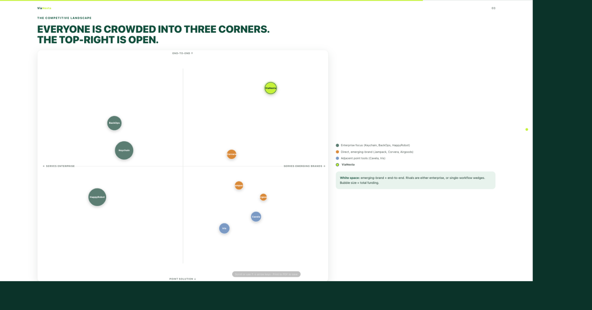
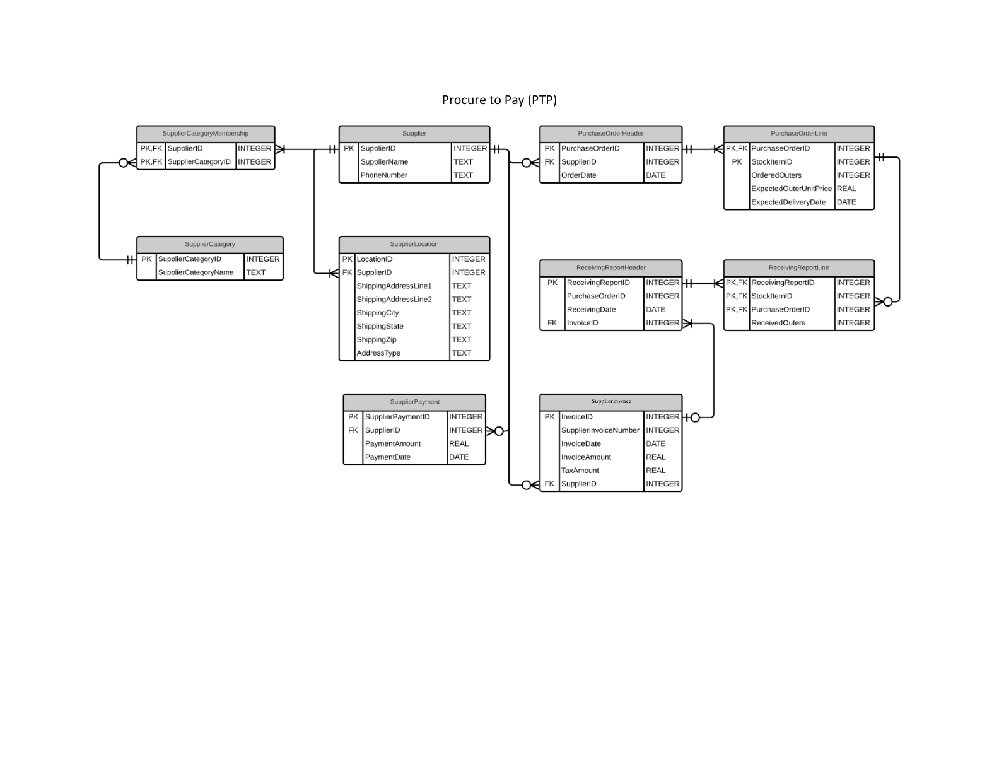
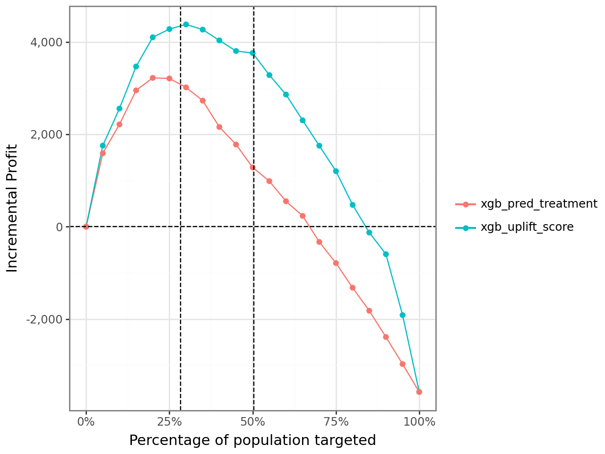
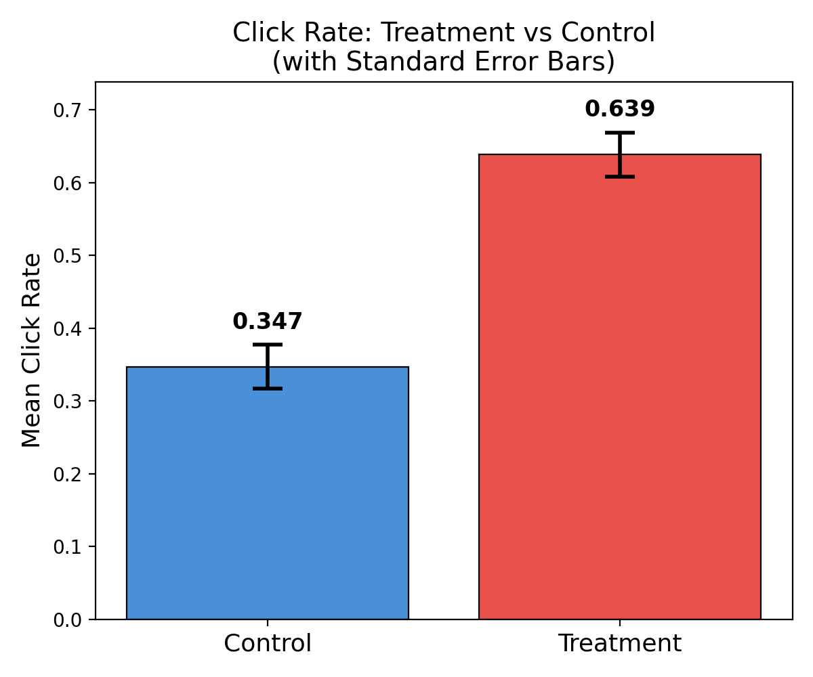
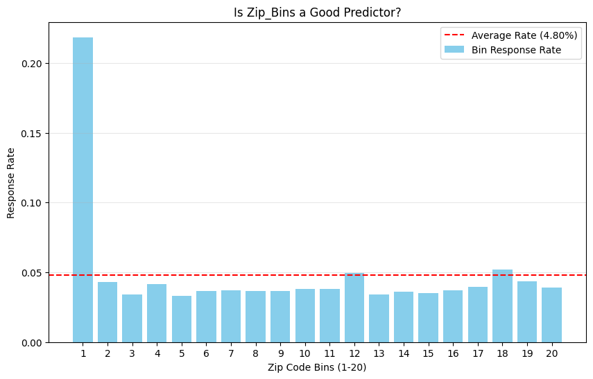
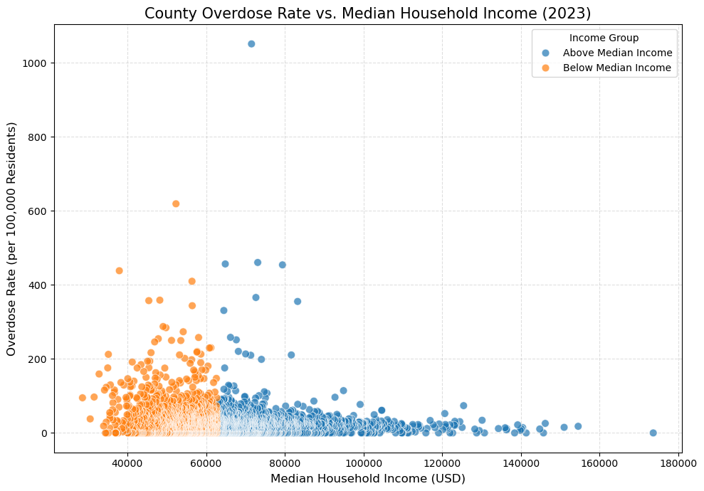

Projects
Eleven projects, ordered by the business decision each one actually changes, from the highest-stakes call down. Every chart and diagram below is pulled straight from my own analysis.

E-Commerce Customer Journey: SQL, Churn & CLV
8 SQL queries + a churn/CLV model on real GA4, Olist, and UK retail data, pressure-tested against its own critique before shipping a PRD. Public repo + live embedded dashboard.

Application Identity Fraud Detection
1,841 engineered velocity features on 1M applications, an insight about placeholder SSNs faking identity links, and a LightGBM model that catches 59% of fraud reviewing just 3% of cases.

Global Wine Market Sourcing Strategy
Built a 4-dashboard Tableau system to turn 130K wine reviews and global GDP data into a two-tier country sourcing recommendation.

Competitive Intelligence Dashboard for a Startup
An automated Python pipeline that scans public funding and market signals for an early-stage CPG startup and renders them into a live, interactive competitive dashboard.

Multi-Source ETL Pipeline for Spend Analysis
Built a Snowflake pipeline joining CSV, Postgres, and XML sources to catch supplier invoice-vs-quote variance at the transaction level.

S-Mobile: Proactive Churn Management
Churn model + 60-month CLV framework on 1M subscribers: two retention programs worth $105M combined, and one that loses money.

Who to Target: Uplift Modeling
Compared propensity vs. uplift targeting across Neural Net, Random Forest, and XGBoost to find who a campaign actually moves, versus who simply looks like a buyer.

Inventory Policy Under Supply Uncertainty
Monte Carlo simulation across 1,000 trials found my seasonally adaptive ordering policy beats fixed and JIT policies by about $10K per location a year.

A/B Test: Landing Page Click-Through
Randomized test lifted click-through from 34.7% to 63.9%, confirmed with OLS regression and a day-of-week heterogeneity check.

Wave-2 Mail Targeting: Logistic Regression vs. Neural Net
Chose a 26-coefficient logistic model over a higher-scoring neural net for an auditable mail/no-mail rule projected to beat mailing everyone by 35x.

Opioid Overdose Vulnerability & Treatment Access
Negative binomial regression on 3,081 counties found below-median-income counties carry 37% higher overdose risk, and that raw clinic counts aren't the protective signal they look like.